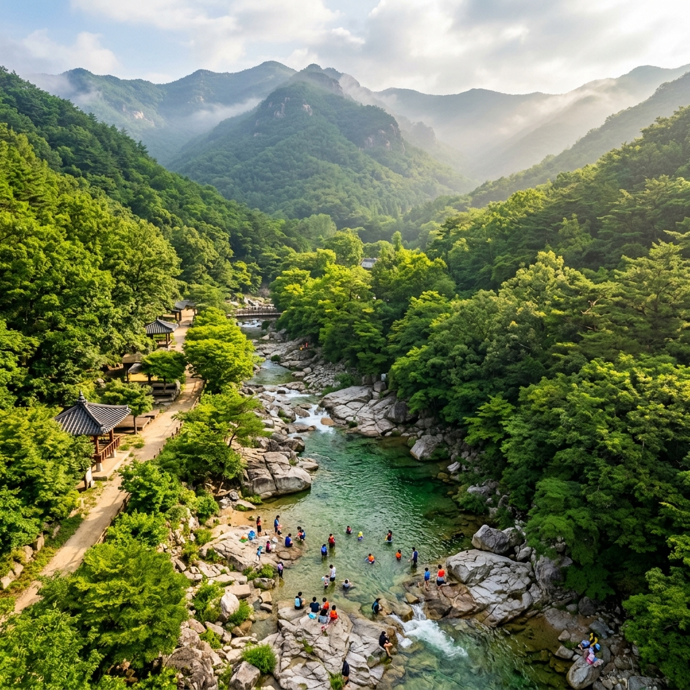
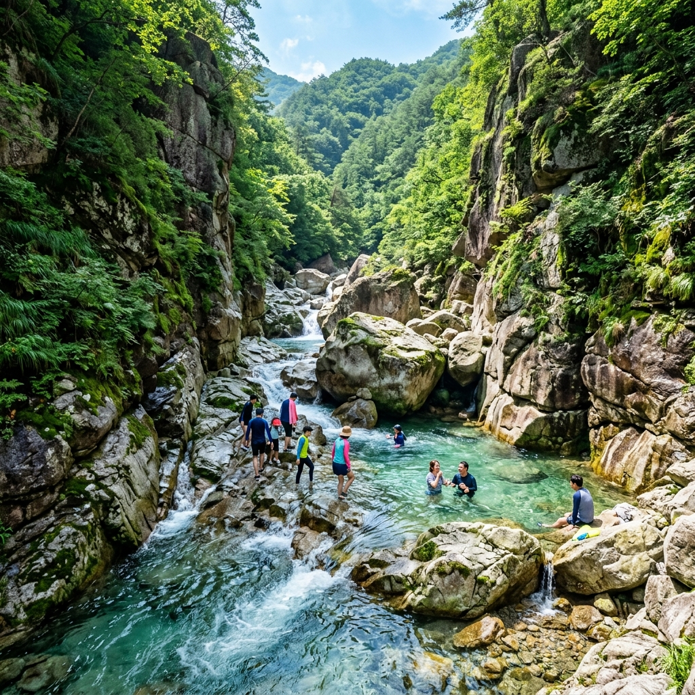
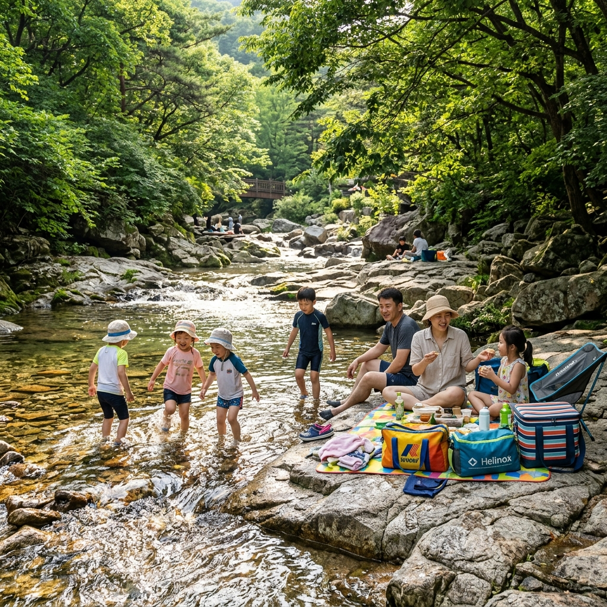

용추계곡에 도착하니 입구에서부터 사람이 제법 있었습니다.
주차를 마치고 계곡 안으로 들어가니 물이 생각보다 맑고 조용했습니다. 큰 나무들이 계곡 양쪽을 덮어 그늘이 풍성했고, 물살이 잔잔해서 아이와 함께 앉아 발을 담글 수 있는 구간이 많았습니다.
반면 포천 백운계곡은 협곡 분위기가 훨씬 강했습니다. 큰 화강암 바위 사이로 물이 빠르게 흐르고, 가끔 협곡을 타고 내려오는 바람이 시원했습니다. 아이보다는 청년들이 더 좋아할 분위기였습니다.
첫인상으로 나눈다면 용추는 "가족 캠핑장 같은 계곡", 백운은 "야생 트레킹 계곡"이라는 표현이 딱 맞는 것 같습니다.

가평 용추계곡은 경기도 가평군 북면에 자리합니다. 서울 상봉이나 청량리에서 ITX-청춘 기차를 타면 가평역까지 40분이면 됩니다. 역에서 계곡까지는 택시로 10~15분 거리입니다.
자가용으로는 서울 강북 기준 약 1시간에서 1시간 30분 정도 소요됩니다. 주말에는 내비가 안내하는 것보다 30~40분 더 걸린다고 보시는 게 현실적입니다.
탐방 지원금은 어른 기준 약 2,000원 내외이며, 주차 요금은 성수기 기준 소형차 하루 4,000~5,000원 수준이었습니다. 다만 해마다 달라질 수 있으니 방문 전 가평군 공식 안내나 현장에서 확인하세요.
계곡 안에는 평상을 빌려주는 업체들이 있고, 성수기 주말에는 오전 중에 마감됩니다. 하루 3~5만 원 수준으로 알려져 있으나 업소마다 차이가 있습니다.
입구에서 500m~1km 구간이 어린이 물놀이에 가장 인기 있는 구역이었습니다. 수심이 무릎 이하인 구간이 많아 아이가 안전하게 놀기 좋았고, 넓은 바위 사이사이에 작은 웅덩이가 생겨 자연 풀장 같은 느낌이었습니다.
상류로 더 올라가면 용추폭포(높이 약 10m)가 나옵니다. 입구에서 걸어서 30~40분 거리이고, 폭포 아래 소가 깊고 차가워 오래 있기 어렵습니다. 폭포 자체는 아름답지만 웅장함보다는 아늑한 느낌에 가깝습니다.
계곡 안쪽은 취사 금지 구역이 많습니다. 취사 허용 구역을 미리 확인하고, 현장 안내 표지판을 꼭 보시기 바랍니다.
포천 백운계곡은 경기도 포천시 이동면에 있습니다. 대중교통으로는 의정부역 또는 동서울터미널에서 포천·이동면 방면 버스를 타야 합니다. 배차가 자주 있는 편이 아니라 자가용을 추천합니다. 서울 기준 약 1시간 30분에서 2시간 소요됩니다.
주차장은 공영과 민박 전용으로 나뉩니다. 당일치기라면 공영 주차장을 이용하면 되고, 성수기 주말에는 오전 8시 이전 도착하지 않으면 자리가 없습니다. 주차 요금은 3,000~5,000원 수준입니다.
계곡 자체 이용은 국립공원 구역이 아닌 부분은 대부분 무료지만, 일부 민박 구역 주변 계곡 이용 시 이용료가 따로 부과되는 경우가 있으니 사전 확인을 권장합니다.

백운계곡의 암반 지형은 정말 인상적이었습니다. 넓은 바위 위로 맑은 물이 흐르는 모습이 어디서도 보기 어려운 풍경이었고, 물에 손을 담갔더니 여름인데도 15분이 지나자 손이 저릴 정도로 차가웠습니다.
다이빙 포인트가 있다는 소문은 들었지만 안전 확인 없이는 절대 이용하지 마시기 바랍니다. 현장에서도 안전 요원이 통제하고 있었습니다.
계곡 상류로 계속 올라가면 국망봉(1,168m)으로 이어지는 등산로가 시작됩니다. 왕복 5~6시간짜리 코스로 체력 소모가 있지만 정상 조망이 훌륭하다고 합니다. 저는 아이가 있어서 계곡 하단부만 즐기고 돌아왔습니다.
가평 용추계곡 장점: 어린이가 안전하게 놀 수 있는 얕은 구간이 많고, 가평역에서 대중교통 접근이 상대적으로 용이합니다. 숲이 무성해 그늘이 많고, 용추폭포라는 볼거리가 있습니다.
가평 용추계곡 단점: 주말에는 인파가 몰려 소음이 심하고, 입구 상업 지구가 조금 번잡합니다. 계곡 안쪽으로 멀리 들어가지 않으면 경관이 평범한 편입니다.
포천 백운계곡 장점: 협곡 지형과 에메랄드빛 물색이 독보적이며, 국망봉 등산과 연계하는 멀티 코스가 가능합니다. 이동갈비로 유명한 맛집들이 근처에 있습니다.
포천 백운계곡 단점: 서울에서 거리가 멀고 대중교통이 불편합니다. 수심이 깊은 구간이 있어 어린이 동반 시 주의가 필요하며, 성수기 주말 주차 전쟁이 더 치열한 편입니다.
이런 분께는 비추: 오전 10시 이후 출발하는 분, 대중교통으로만 이동 계획인 분(특히 백운계곡), 유아(걸음마 단계)를 데리고 가시는 분(백운계곡).
가평 용추계곡 주변은 삼겹살과 닭갈비 식당이 많습니다. 가평 읍내로 나가면 가평 잣 막걸리나 잣을 이용한 간식도 즐길 수 있어 먹거리 면에서 풍부한 편입니다.
포천 백운계곡 주변은 이동갈비가 유명합니다. 포천 이동면 일대에 이동갈비 전문 식당들이 있고, 계곡 후 저녁 식사로 즐기기 좋습니다. 직접 먹어보니 육질이 부드럽고 숯불 향이 좋았습니다. 가격대는 가게마다 다르니 메뉴판 확인 후 입장하세요.
두 계곡 모두 계곡 안에서 취사할 수 있는 구역이 제한적이므로 도시락을 챙겨가거나 주변 음식점을 이용하는 것이 편리합니다.
계곡은 바다와 달리 수온이 10~18℃ 수준으로 매우 낮습니다. 30분 이상 물속에 있으면 저체온 증상이 나타날 수 있으니 짧게 여러 번 들어가는 방식이 좋습니다.
계곡 물놀이 전 10분 이상 스트레칭을 하고, 물에 들어가기 전 무릎·팔·얼굴 순서로 물을 끼얹어 몸을 적응시키세요.
음주 후 입수는 절대 금물입니다. 계곡에서 익수 사고의 상당수가 음주와 관련되어 있습니다. 아쿠아슈즈는 선택이 아니라 필수입니다. 미끄러운 암반에서 맨발로 걷다 발을 다치는 경우가 많습니다.

오전 8~9시 이전 도착 목표 세우기 (주차·자리 확보), 아쿠아슈즈·수건·자외선 차단제·생수 필수, 어린이 동반 시 구명조끼 챙기기, 성수기 주말은 평일 대비 2~3배 혼잡 예상하기, 기상청 앱에서 당일 날씨와 강수량 미리 확인하기.
두 계곡 모두 좋지만 같은 날 두 곳 다 가기엔 이동 시간이 부담됩니다. 아이와 함께라면 용추, 스릴과 경관을 원한다면 백운을 선택하시기 바랍니다. 이 글이 여름 계곡 피서 계획에 도움이 되길 바랍니다.